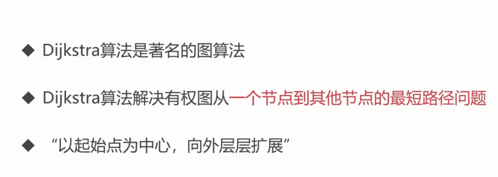

<h1 id="Dijkstra迪杰斯特拉算法"><a href="#Dijkstra迪杰斯特拉算法" class="headerlink" title="Dijkstra迪杰斯特拉算法"></a>Dijkstra迪杰斯特拉算法</h1><h1 id="概览"><a href="#概览" class="headerlink" title="概览"></a>概览</h1><p></p>
<h1 id="最短路径问题"><a href="#最短路径问题" class="headerlink" title="最短路径问题"></a>最短路径问题</h1><p></p>
<h1 id="实现方法"><a href="#实现方法" class="headerlink" title="实现方法"></a>实现方法</h1><p></p>
<h1 id="示例"><a href="#示例" class="headerlink" title="示例"></a>示例</h1><p>初始化</p>
<p></p>
<p>U不为空</p>
<p></p>
<p>计算决定是否更新U</p>
<p></p>
<p></p>
<p>计算刚刚添加的 A→D</p>
<p></p>
<p></p>
